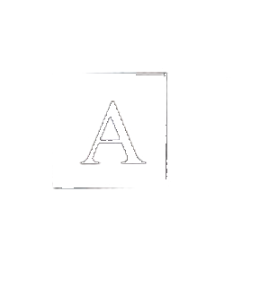
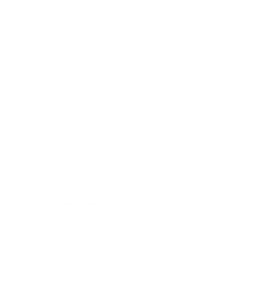
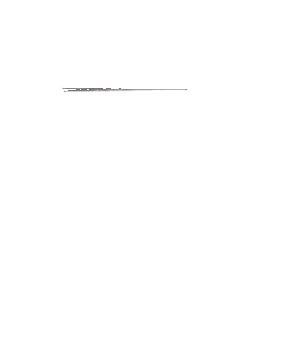
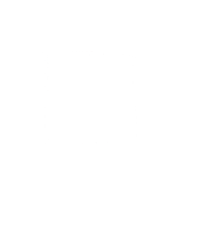
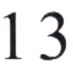
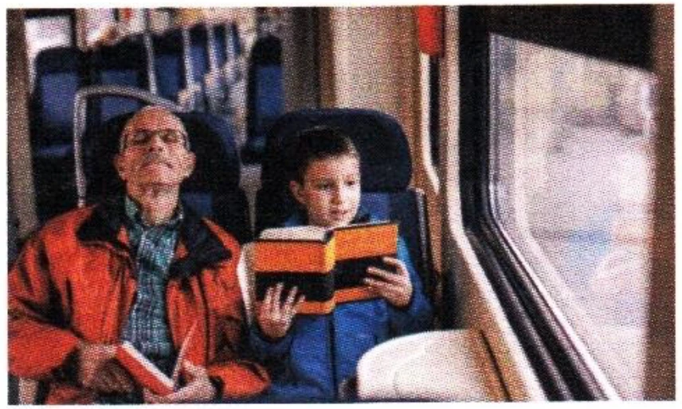
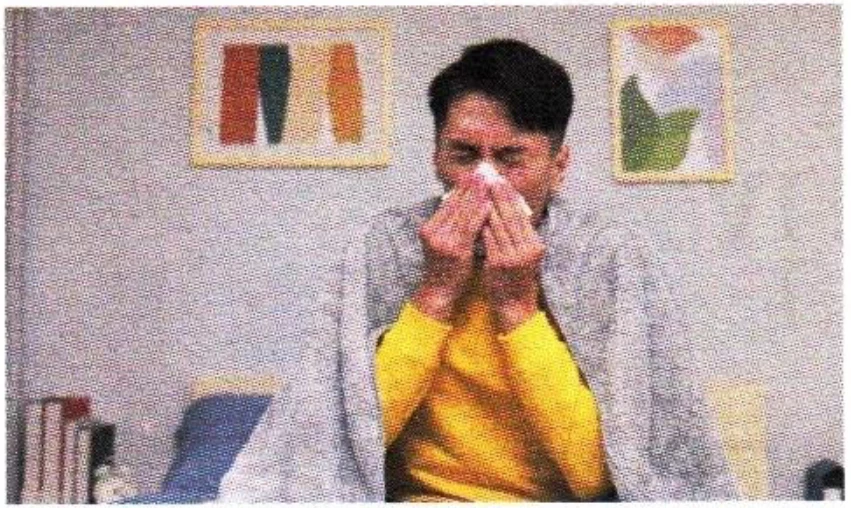
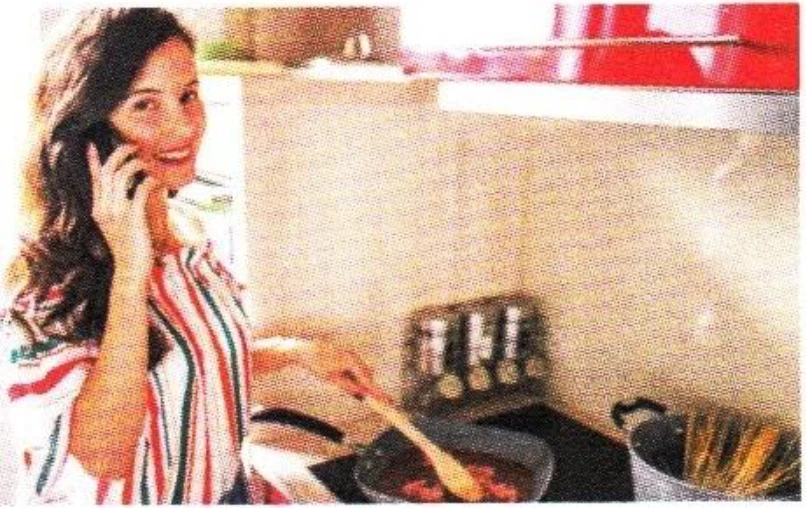

二、阅读ReadingЧтение
第一部分Part IЧасть I
第11—13题： 选择与句子最匹配的图片。Questions 11–13: Choose the correct picture for each sentence.Вопросы 11–13: Выберите картинку, которая лучше всего подходит к каждому предложению.
AА
BБ

CВ

DГ

Wǒ hěn xǐhuan zhè běn shū.例如： 我很喜欢这本书。
I like this book very much.Мне очень нравится эта книга.AА
11.
王先生今天生病了， 没来上班。
12.
火车上， 有的人在读书， 有的人在睡觉。
喂， 他们都来我家了， 你也来吧。
第二部分Part IIЧасть II
第14—16题： 匹配句子。Questions 14–16: Match the sentences.Вопросы 14–16: Сопоставьте предложения.
A是的， 我睡了一觉。
B我们都去了。
C写字、看书、吃饭。
D好的， 谢谢！